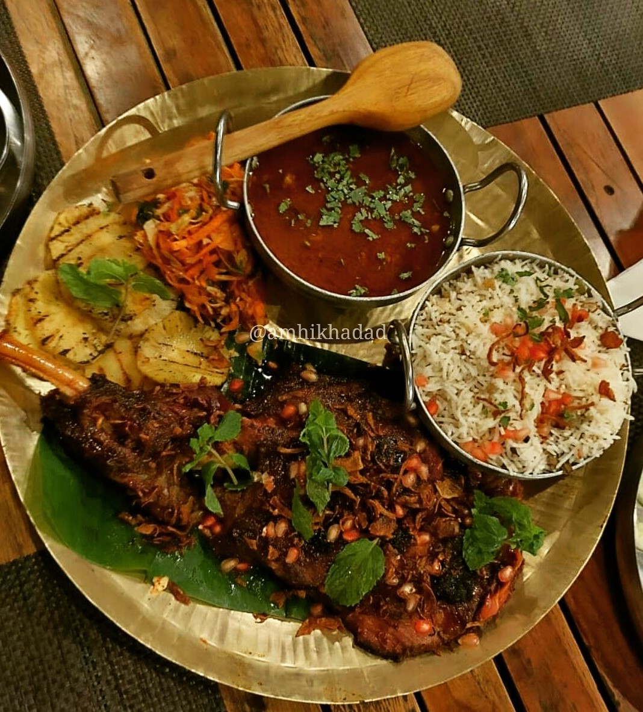

What is आम्ही खादाड ?
This page features food blogs and reviews that share delicious information.
Food is just not different around the world but also around the streets of Pune.
Food is something that connects us all , and for us food is the best way to connect
and have the best cultural experience of Pune.
Then if you're a hungryhead then we suggest to follow us on Instagram @amhikhadad right now so that you don't miss out on all the fun.